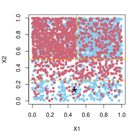
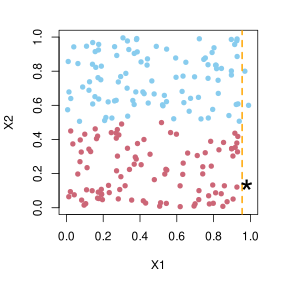

![]()

\newcommand{\diag}{\operatorname{diag}} \newcommand{\var}{\mathrm{Var}} \newcommand{\xs}{x^*} \newcommand{\xsj}{x_j^*} \newcommand{\xsij}{x_j^{*(i)}} \newcommand{\inroot}{\in\text{ROOT}} \newcommand{\idxi}{^{(i)}} \newcommand{\Nmin}{N_{\text{min}}} \newcommand{\mtry}{m_{\text{try}}} \newcommand{\indicator}{\mathds{1}} \renewcommand{\P}{\mathbb{P}}
1 Introduction
The machine learning field of local/lazy/instance-based/case-specific learning (Aha, Kibler, and Albert 1991) aims at taking into account a particular instance x^* to produce a prediction thanks to its similarity to the training data set. It is opposed to eager learning, where the prediction is divided in two parts: a training phase where a global model is fitted and then a prediction phase. The local approach, in contrast, fits a model taking into account the information provided by x^*.
Two closely related learning fields need to be mentioned: semi-supervised learning (Chapelle, Schölkopf, and Zien 2010) and transductive learning (Gammerman, Vovk, and Vapnik 1998). Semi-supervised learning introduces unlabeled data (whose response is unknown) in addition to labeled ones to build a general model within the training phase. Then, in the testing phase this model is used to predict the response value of a new unlabeled data (different from the first ones). Transductive learning takes profit of a set of labeled and unlabelled data to avoid the construction of a general model and directly predicts the response values of those same unlabeled data. To our knowledge, semi-supervised and transductive learning require a high number of test/unlabeled instances. In our case only one is provided, making those approaches unsuitable.
The main drawback of local learning approaches is their high computational cost, because for each new test data a model has to be constructed. However, it can be very useful in domains where only one test instance is provided.
Approximate Bayesian computation (ABC, Tavaré et al. (1997); Pritchard et al. (1999)) is a statistical method developed for frameworks where the likelihood is intractable. It relies on simulations according to Bayesian hierarchical models to generate pseudo-data. These artificial data are then compared to the test/observed one. To this effect , the most basic algorithm is based on nearest neighbors (NN). Recently, Breiman (2001)’s machine learning algorithm of random forests (RF) proved to bring a meaningful improvement to the ABC paradigm in both a context of model choice (Pudlo et al. 2016) and parameter inference (Raynal et al. 2019). Here, we focus on the model choice problem and thus the classification setting. Unlike some ABC techniques that take advantage of local methods, such as local adjustment (Beaumont, Zhang, and Balding 2002; Blum and François 2010; Blum et al. 2013), ABC-RF trains an eager RF to predict, later on, the observed data. It seems sub-optimal because in the ABC framework only the observed data is of interest for prediction. The ABC-RF strategy might therefore greatly benefit from local versions of RF.
Here, we focus on reviewing and proposing tree-based method to predict at best a specific data of interest. We start with some reminders on Breiman (2001)’s RF algorithm. We then study local tree-based approaches depending on the way the localization process is performed. In Section 3, we introduce internal modifications of the RF concerning the splitting rule. Then, we take an interest on modifying the random aspects of RF to turn them into local ones. We focus on modifying the sampling of individuals in Section 4, and the sampling of predictors in Section 5. Local weighting of votes is finally presented in Section 6. We empirically compare these strategies with the original, eager one in four examples where a local approach might be of interest.
2 Reminders on Breiman’s random forest
In the following we consider a classification problem. We use a set of d explanatory variables X=(X_1, \ldots, X_d) to predict the categorical/discrete response Y belonging to \{1,\dots,K\}..
The training data set is composed of N realizations \big\{ (y^{(i)}, x^{(i)}) \big\}_{i=1,\ldots,N}. We consider Breiman (2001)’s random forest as the reference method to improve.
An RF is a set of randomized trees (L. Breiman et al. 1984), each one partitioning the covariates space thanks to a series of allocation rules and assigning a class label as prediction to each partition. A binary tree is composed of internal and terminal nodes (a.k.a. leaves). For each internal node, a splitting rule on an explanatory variable is determined by maximizing an information gain, dividing the training set in two parts. This process is recursively iterated until a stopping rule is achieved. The internal node encountering a stopping rule becomes terminal. For continuous covariates, a splitting rule compares a covariate X_j to a bound s, allocating to the left branch the data verifying the rule X_j \leq s, and to the right all others. For categorical covariates, the splitting rule is chosen among all the possible two-way splits of the covariate categories.
The covariate index j and the bound s are chosen to maximize the decrease of impurity between the mother, denoted t, and the two resulting left and right daughter nodes, denoted t_L and t_R, (weighted by the number of data at each node). This gain associated to a covariate j and split value s is always non negative and is written as
G(j,s) = I(t) - \left( \frac{\#t_L}{\#t} I(t_L) + \frac{\#t_R}{\#t} I(t_R) \right), \tag{1}
where \# refers to the number of data in the associated node, and I(\cdot) is the impurity. The impurity, i.e. the heterogeneity at a given node, is measured with either the Gini index or the entropy. The Gini index, defined for categorical variables as \sum_{k=1}^K p_k(1-p_k), is less computationally intensive as is counterpart, the entropy, defined as \sum_{k=1}^K p_k\log(p_k) which gives slightly better results. In both cases, the objective is to select the allocation rule that reduces the impurity the most, in other terms that produces the highest gain.
Splitting events stop when one of the three following situation is reached:
- all individuals of the data set at a given node have the same response value (the node is pure),
- all individuals have the same covariate values,
- a node has less than N_{\text{min}} instances, N_{\text{min}} being an user-defined integer value, typically set to 1 for classification.
Once the tree construction is complete, each leaf predicts a model index, corresponding to the majority class of its instances. For a new set of explanatory variables x^*, predicting its model index implies passing x^* through the tree, following the path of binary rules, and the predicted value is the value associated to the leaf where it falls.
The RF method consists in bootstrap aggregating (bagging, Breiman (1996)) randomized (classification) trees. A large number of trees is trained on bootstrap samples of the training data set and m_{\text{try}} covariates are randomly selected at each internal node, on which the splitting rule will be defined. m_{\text{try}} is usually set at \lfloor \sqrt{d} \rfloor, where \lfloor \cdot \rfloor denotes the floor function. The predicted value for a data x^* is the majority vote across all tree predictions. RF methods have some theoretical guarantees for sparse problems (Biau 2012; Scornet, Biau, and Vert 2015). Moreover, it is well-known that their performances are quite good even when no tuning is made.
3 Local splitting rules
We now turn to discuss local tree methods. A first option to localize the tree construction is to change the information gain to the benefit of a local one. The idea is to use the test instance x^* to drive the splits and thus the tree construction.
Indeed, because the best split is selected on average, an eager tree may lead to many irrelevant splits to predict x^*, potentially discarding data relevant for the considered example at early stages of the tree. This behavior results from data fragmentation (Fulton et al. 1996), i.e. from the recursive partitioning of the explanatory variables space to achieve good global performances. In the following we mention this phenomenon as the fragmentation problem. A very simple 2-class classification problem presented in Figure 1 illustrates this issue. The distribution of the training data set will induce, when possible, an initial cut for the tree construction in X_1\approx0.5, however, the unlabeled instance (represented by a black star) is in a region where a lot of relevant instances will be discarded after this first data split. A more pertinent first cut should occur in X_2\approx0.25. This problem, called fragmentation problem, also leads to less significant splitting rules at deeper levels of the tree construction since based on fewer instances. It is thus interesting to consider a local approach taking x^* into account.
It is interesting to note that building a local tree by modifying its internal construction results in building a single trajectory only, since the splitting rules are only applied on branches containing x^*. A local tree is therefore a tool to recursively remove non-relevant data points from the classifier rule. Thus, a local random forest might be much faster for its construction compared to the eager version, especially if only one instance is of interest.
In this section we present the approach of Friedman, Kohavi, and Yun (1997) to build local decision trees, called lazy decision trees, and expand it for RF. We also present our attempts at using unidimensional or multidimensional kernels to give more weight to training samples closer to x^*.
3.1 Lazy decision trees
The lazy decision tree algorithm (LazyDT) is introduced in Friedman, Kohavi, and Yun (1997). Its objective is to take into account x^* during the tree construction. To do so, the information gain – depending on j and s – to maximize at each node is modified compared to criterion Equation 1. Only the difference of impurity between the mother node t and the daughter node where x^* ends, denoted t^*, is considered. The resulting local information gain is defined by
G_w(j,s) = I_w(t) - I_w(t^*), \tag{2}
where I_w is the information gain computed with data at the node, weighted by a weight vector w=(w^{(1)}, \ldots, w^{(N)}) (described below). Note the absence of the proportion of individuals \#t_L/\#t or \#t_R/\#t compared to gain Equation 1.
To ensure that this gain is always non-negative, to each instance (y^{(i)}, x^{(i)}) is assigned a weight w^{(i)}=\frac{1}{n_k K} when y^{(i)}= k and where n_k is the number of data labeled k at the mother node. Indeed, this weight ensures that all the weighted class frequencies are equal at the mother node, hence the weighted mother node impurity I_w(t) is maximal and the resulting gain always non-negative. The value of I_w(t) is equal to \frac{K-1}{K} for the Gini index, and to \log(K) for the entropy. Due to this constant value, the maximization of Equation 2 is equivalent to the minimization of I_w(t^*). Note that the weights used at t^* and t are the same (limited to the sub-sample induced by the potential cut depending on j and s for t^*), but are recomputed after each accepted tree partition.
Moreover, those weights also avoid the problem that the impurity measures only use the classes proportions, without distinction of their associated class labels. Indeed, let us take the example of a two-class classification problem (1 and 2), where the mother node contains 80\% of data labeled 1 and 20\% labeled 2. A splitting rule computed on unweighted data might induce, at the daughter node where x^* falls, 20\% and 80\% as proportions of 1 and 2, respectively. In this way, the non-weighted gain Equation 2 would be zero, even though the discriminatory power of this cut is clearly non-null.
LazyDT provides three other major features: the use of discretised explanatory variables, the use of options and a condition on allowed split events.
- This algorithm only handles discretised explanatory variables. A preliminary discretisation is thus necessary, using for example the minimum description length principle (Fayyad and Irani 1995). This was initially introduced to enhance the algorithm speed. According to our experiments this might also be useful when continuous noise variables are considered as features as splitting along them may result in early strop of the algorithm. For instance in Figure 2 below, x^*_1 is localized at a border of x1 values, together with two datapoints with same label. The next splitting rule will isolate them with x^*_1 because the resulting node will be pure and hence provide the maximum gain. x^* would thus be classified as sky-blue, even though a cut along x2 would have resulted in a purple prediction using many more datapoints. The discretisation will be an asset in such situations since pure noise variables are more likely to be discretised into a unique or few categories containing large amount of data.
- The use of options is introduced. Indeed, because features can induce very similar information gains, Friedman, Kohavi, and Yun (1997) advise to develop all the paths – induced by splitting rules – achieving at least 90\% of the maximal possible gain. The prediction associated to a tree for x^* becomes the prediction of the leaf with the maximal number of individuals in its majority class. We tried values different from 90\% and it did not provide better results. Moreover, we studied an alternative to this method of prediction: because each option provides a prediction for x^*, we considered taking as final prediction the majority vote of these option predictions, but again results were not more conclusive.
- Finally, LazyDT only considers split values that are not equal to the values of x^* as potential cuts.

The LazyDT algorithm has undergone some developments. First, a bagged version to deduce class probabilities is presented in Margineantu and Dietterich (2003). A boosted version is then introduced in Fern and Brodley (2003). Friedman, Kohavi, and Yun (1997) mention as main drawback for this method its inability to allow pruning. Fern and Brodley (2003) propose a heuristic to overcome this drawback, but their algorithm is not guaranteed to improve the classifier accuracy. Considering trees-ensemble overcomes this weakness.
3.2 Unidimensional (per covariate) kernel approach
Most local methods are based on weights depending on the proximity to x^*. This is the case of locally weighted regression (Cleveland 1979, 1988; Fan 1993; Hastie and Loader 1993). There are different ways to use weights in the context of tree methods. One can think of taking into account these weights to define the training sets on which trees are built. Such type of strategy is described in Section 4. In this section, we examine the possibility of using weights during tree construction, inside the tree splitting criterion.
In the wake of locally weighted regression, we set a weight to each training individual and per covariate j depending on its proximity to x_j^* in the covariate j space. We consider a Gaussian kernel centered in x_j^*, providing weights K_{h_j}(x_j^{(i)} - x_j^*), \;\; \text{for} \;\; i\in\{1,\ldots,N\}.
We focus on a Gaussian kernel due to its smoothness and to avoid giving exactly zero weights to some individuals, so that K_{h_j}(x_j^{(i)} - x_j^*)=1/(\sqrt{2\pi} h_j) \exp\left(-\frac{(x_j^{(i)} - x_j^*)^2}{2h_j^2}\right).
The choice of the bandwidth h_j is tricky. We consider as bandwidth value h_j the quantile of order \alpha of the distribution of distances to x^*: \mathbb{Q}_\alpha \left\{ \mid x_j^{(i)} - x_j^*\mid_{i=1, \ldots, N} \right\} (ie h_j=d^j_{(\alpha N)} where d^j_{(1)},\dots ,d^j_{(N)} are the ordered distances \mid x_j^{(i)} - x_j^*\mid of the training data points to x^* in the covariate j space). The parameter \alpha determines the shape of the kernel. For low \alpha values, a higher weight is given to data close to x^*, and vice-versa. In our numerical experiments, we clearly observed that low values of \alpha again result in cuts too close to x_j^*. We set \alpha=1, i.e. h_j is the maximum of the absolute values considered. Moreover, the bandwidth can eventually be recalculated at each internal node or kept constant during the tree construction. We observed very few differences when using a fixed or a varying bandwidth and h_j is set as constant in the following.
For a given class label k, at the mother node t, this approach transforms the usual class frequencies (giving uniform weights among data) into some weighted class frequencies in the following way:
p_k = \frac{\sum_{i:x^{(i)}\in t} \mathbf{1}\{ y^{(i)}=k \}}{\#t} \quad \Rightarrow \quad \;\;\; \widetilde{p}_{k,j} = \frac{\sum_{i:x^{(i)}\in t} \mathbf{1}\{ y^{(i)}=k \} K_{h_j}(x_j^{(i)} - x_j^*)}{\sum_{\ell:x^{(\ell)}\in t} K_{h_j}(x_j^{(\ell)} - x_j^*)},
where \mathbf{1}\{\cdot\} is the indicator function. Moreover, the proportion of individuals, for example, at the left daughter node t_L implied by a cut X_j \leq s is transformed from
\frac{\#t_L}{\#t} = \frac{\sum_{i:x^{(i)}\in t} \mathbf{1}\{ x_j^{(i)} \leq s \}}{\#t} \quad \text{into} \quad \frac{\widetilde{\#t_L}}{\widetilde{\#t}} = \frac{\sum_{i:x^{(i)}\in t} \mathbf{1}\{ x_j^{(i)} \leq s \} K_{h_j}(x_j^{(i)} - x_j^*)}{\sum_{\ell:x^{(\ell)}\in t} K_{h_j}(x_j^{(\ell)} - x_j^*)}. \tag{3}
The information gain to maximize (based on the Gini index) thus becomes
\sum_{k=1}^K \widetilde{p}_{k,j} (1-\widetilde{p}_{k,j}) - \Big(\frac{\widetilde{\#t_L}}{\widetilde{\#t}} \sum_{k=1}^K \widetilde{p}_{k,j}^L (1-\widetilde{p}_{k,j}^L) +\frac{\widetilde{\#t_R}}{\widetilde{\#t}} \sum_{k=1}^K \widetilde{p}_{k,j}^R (1-\widetilde{p}_{k,j}^R) \Big) \tag{4}
where \widetilde{p}_{k,j}^L and \widetilde{p}_{k,j}^R are the weighted proportions of class k at the left and right daughter nodes, respectively.
\begin{equation} \let\scriptstyle\textstyle\substack{\widetilde{I_j}(t)}=\sum_{k=1}^K \widetilde{p}_{k,j} (1-\widetilde{p}_{k,j}) \end{equation}
\begin{equation} \let\scriptstyle\textstyle\substack{\widetilde{I_j}(t_L)}=\sum_{k=1}^K \widetilde{p}_{k,j}^L (1-\widetilde{p}_{k,j}^L) \end{equation}
\begin{equation} \let\scriptstyle\textstyle\substack{\widetilde{I_j}(t_R)}=\sum_{k=1}^K \widetilde{p}_{k,j}^R (1-\widetilde{p}_{k,j}^R) \end{equation}
The first term \widetilde{I_j}(t) is important and cannot be omitted contrary to the eager version, because it depends on the covariate index.
We use this local Gini index during the tree construction and do not modify the default values for the RF parameters m_{\text{try}} and N_{\text{min}}. For each tree, the associated prediction is the usual majority vote at the leaf.
Our local splitting rule is similar to the one used in the recent method of Armano and Tamponi (2018). In their work, an improvement to RF is introduced by using an ensemble of local trees. Each tree is trained giving more weight to training data around a centroid, which is sampled among the training instances, and different centroids are considered to map the whole predictor space. Although using a local Gini index, this approach is more of an eager one than a local one. Indeed, no test instance is involved during the forest construction. Moreover, a multidimensional kernel per tree is used.
3.3 Multidimensional kernel approach
In the spirit of Armano and Tamponi (2018), it is natural to extend the approach introduced in Section 3.2 with a multidimensional kernel centered in x^*. We assign to each data (y^{(i)},x^{(i)}) a weight K_V(x^{(i)}-x^*) = 1/(2\pi)^{d/2}\exp{ \left( -\frac{1}{2}(x^{(i)}- x^*)^\top V^{-2} (x^{(i)}- x^*) \right)}, where V is a scaling matrix of the Gaussian kernel. Similarly to Section 3.2 we consider for V the diagonal matrix made of the \alpha quantiles, i.e. V= \operatorname{diag}\left(\mathbb{Q}_\alpha \left\{ \mid x_1^{(i)}- x_1^* \mid_{i=1, \ldots, N} \right\}, \ldots, \mathbb{Q}_\alpha \left\{ \mid x_d^{(i)}- x_d^*\mid_{i=1, \ldots, N} \right\} \right). As for the unidimensional kernel approach, using extensive numerical experiments, we observed that low values of \alpha result in cuts too close to x_j^* and we set \alpha=1. Also, the weights are fixed during the tree construction.
The weighted frequency for a given class label k becomes
\widetilde{p}_k = \frac{\sum_{i=1}^N \mathbf{1}\{ y^{(i)}=k \} K_V(x^{(i)}-x^*)}{\sum_{\ell=1}^N K_V(x^{(\ell)}-x^*)}.
The weighted proportions of individual at the daughter nodes are transformed in a similar manner to Equation 3, resulting in a gain criterion analogous to Equation 4.
The major benefit of such weights is that they do not depend on the covariate index, thus the usual tree prediction, i.e. the majority class at the leaf where x^* falls, can be replaced by a more coherent strategy with the tree construction, using as prediction the class with the maximal weighted class proportion at the leaf. Thus, the prediction for x^* provided by the b-th tree is \hat{y}_b^* = \operatorname{argmax}_{1\leq k \leq K} \widetilde{p}_k. The forest prediction for x^* is the usual majority vote of the tree predictions.
4 Local weighting of individuals
To avoid the fragmentation problem, instead of modifying the way the predictor space is partitioned, one can consider directly targeting the region of interest, i.e. samples similar to x^*. In this part, we focus on strategies acting on the individuals sampling schemes involved at the first step of a tree construction, replacing the usual bootstrap sampling with a local one.
4.1 Weighted bootstrap
Xu, Nettleton, and Nordman (2016) propose to perform weighted bootstrap sampling, where a measure of proximity between x^* and the training data is used to compute the weights. This algorithm is entitled Case-Specific Random Forest (CSRF, Algorithm 1).
An individual closer to x^* will have higher weight and will more likely be picked in the bootstrap sampling. However, such weights depend heavily on the choice of the proximity measure, especially in a high dimensional setting and with many irrelevant explanatory variables. This is why in this framework the proximity measure will be automatically computed thanks to a bagged tree-ensemble (i.e. with m_{\text{try}}=d).
Indeed, for a given tree, x^* ends in a leaf with some training data. For each x^{(i)}, counting the number of trees where x^* and x^{(i)} end in the same leaf allows to compute the contribution of x^{(i)} to predict x^*, denoted \omega^{(i)} in Algorithm 1. The deduced weights are then used to perform weighted bootstrap sampling during the training of a new RF. This process can be seen as a nearest neighbors strategy: per tree, a leaf provides a certain amount of neighbors to x^*, those are then accumulated over all the trees to deduce instance weights.
This algorithm highly depends on the depth of the first RF trees, hence a pivotal parameter for this strategy is N_{\text{min}}, the minimal number of observations at an internal node. The higher N_{\text{min}}, the shallower the trees will be. Hence, low values of N_{\text{min}} result in putting more weight on the closest individuals to x^*, and vice-versa. We tried various values of N_{\text{min}} in our experiments, and find that optimal performance require Nmin not to be too small.
Algorithm 1: CSRF – local weighting of individuals
Step 1. Grow B_1 bootstrapped trees with m_{\text{try}}=d and a given N_{\text{min}} value
Step 2. For each training data (y^{(i)}, x^{(i)}), count c^{(i)} the number of times x^{(i)} and x^* end in the same leaf
Step 3. Compute the resampling probability of the training individual i relative to x^* as \omega^{(i)}=\frac{c^{(i)}}{\sum_{\ell=1}^N c^{(\ell)}}, for i \in \left\{ 1, \ldots, N \right\}
Step 4. Train a usual RF of size B_2 with bootstrap resampling probabilities \omega^{(1)}, \ldots, \omega^{(N)} and deduce the prediction for x^*
4.2 Nearest neighbours: 0/1 weights
A more intuitive idea is based on the deduction of \kappa nearest neighbors (NN) to x^*, which are then used to train an RF. Fulton et al. (1996) propose several methods to extract data local to x^* – the best one being based on NN – in order to build decision trees on this restricted training set. Galván et al. (2009) also mention the possibility of pre-selecting closest observations to x^* (possibly with replicates) at first and applying any machine learning algorithm on these data set. This kind of strategy is more recently applied in a text classification framework by Salles et al. (2018), and shows good improvements in terms of classification errors compared to RF (and other ones).
Those approaches are closely related to CSRF (Section 4.1) since considering NN during a preliminary step is equivalent to giving 0/1 sampling weights (with or without replacement).
In Section 7, we compare the use of a preliminary selection of nearest neighbors to x^* followed by a usual RF training, this strategy is denoted in the remaining by NN-RF, for nearest neighbors - random forest. The main issue of such approaches (and local ones in general) is the difficulty to choose this neighborhood.
5 Local weighting of covariates
Instead of acting on the bootstrap resampling of RF, we propose to operate on the covariates subsampling which occurs at each internal node. In the wake of Section 4.1 we propose to weight covariates during the RF trees construction depending on their importance to predict x^*. In the following we mention it as LVI-RF (for local variable importance - random forest).
We study the influence of considering sampling probability weights on explanatory variables. The principle is detailed in Algorithm 2 and is very similar to Algorithm 1.
We take profit of a first RF construction with default parameters to deduce covariate importance to predict x^*: in a very intuitive way we pass x^* through each tree of the RF, and count the number of times each covariate is involved in a splitting rule to allocate x^*. We can then easily deduce some predictor weights, and we propose to introduce them into the usual RF covariate sampling, so that a covariate with high weight is more likely to be drawn in the m_{\text{try}}-sample.
Our thought is that using such weights might improve the prediction accuracy of the RF, especially in a sparse framework, by avoiding useless data fragmentation according to irrelevant predictors and potential loss of useful training data for the prediction of x^*. Moreover, a different set of explanatory variables might be useful to predict different test instances, thus thanks to a local measure of variable importance we also try to ensure that interesting covariates are more likely to be sampled during the tree construction. Finally, in the case of a huge number of noise covariates, even though RF can handle a large number of features, useful ones are very unlikely to be drawn during the tree construction, deteriorating the algorithm performance. In counterpart, weighted covariate sampling might increase the prediction correlation between the RF trees and alter the performance of the global tree ensemble.
Algorithm 2: Local weighting of covariates
Step 1. Grow B_1 randomized trees with m_{\text{try}}=\lfloor \sqrt{d} \rfloor and N_{\text{min}}=1
Step 2. For each covariate j \in \left\{ 1, \ldots, d \right\}, count v_j the number of times X_j has been used during the paths followed by x^*
Step 3. Compute the resampling probability of the covariate j relative to x^* as p_j=\frac{v_j}{\sum_{\ell=1}^d v_\ell}, for j \in \left\{ 1, \ldots, d \right\}
Step 4. Train a usual RF of size B_2 with covariate resampling probabilities p_1, \ldots, p_d at each internal node and deduce the prediction for x^*
Some approaches dealing with covariate weighting have been studied in a non-local framework. Amaratunga, Cabrera, and Lee (2008) propose the enriched random forests in an extremely noisy feature space, where covariate sampling is modified using global weights. Maudes et al. (2012), with their random feature weights approach, investigate the use of non-uniform sampling of covariates, changing for each tree.
6 Local weighting of votes
The final prediction of a classical RF is the majority vote of all trees, hence they all have equal weight. However a given tree might provide very good predictions on some test instances, but perform very poorly on others. This is why a strategy for building local random forests is based on weighting tree predictions depending on their ability to correctly predict instances similar to x^*. Majority vote is hence replaced with locally weighted vote.
In the instance-based framework, Robnik-Šikonja (2004); Tsymbal, Pechenizkiy, and Cunningham (2006) and then Zhang, Ren, and Suganthan (2013) investigate this idea. Given a test instance x^*, \kappa neighbors are selected based on the proximity measure introduced in Breiman (2001), (i.e. the average number of times two data end in the same leaf) to compute a per-tree error score. These scores are further used to select and weight trees and to provide a final weighted-vote prediction.
6.1 Dynamic voting and selection
This section describes the methodology of Tsymbal, Pechenizkiy, and Cunningham (2006), called Dynamic Voting with Selection Random Forest (DVSRF). A first RF is trained thanks to which \kappa nearest neighbors to x^* are selected. The quality of the b-th tree toward x^* is then evaluated as the average margins of the out-of-bag \kappa instances, weighted by proximities, i.e.
w_b(x^*) = \frac{ \sum_{i=1}^\kappa \mathbf{1}\{x^{(i)}\in \text{OOB}_b\} \, \sigma(x^*, x^{(i)}) \, \text{mr}_b(x^{(i)}) }{\sum_{\ell=1}^\kappa \mathbf{1}\{x^{(\ell)} \in \text{OOB}_b\} \, \sigma(x^*, x^{(\ell)}) } \, , \tag{5}
where \text{OOB}_b is the set of out-of-bag data for the b-th tree, \sigma(x^*, x^{(i)}) is the proximity measure provided by the RF, to the power of 3, and the margin function \text{mr}_b(x^{(i)}) is equal to 1 if the b-th tree predicts y^{(i)} correctly, -1 otherwise. Weights Equation 5 are then normalized to be positive and to sum to one. Finally, the prediction for x^* is computed using the majority class of the weighted tree vote proportions
\hat{y}^* = \operatorname{argmax}_{1\leq k \leq K} p_{\text{DVS},k} \;\;\;\;\;\; \tag{6}
\text{where} \;\;\;\;\;\; p_{\text{DVS},k} = \frac{\sum_{b=1}^B \mathbf{1}\{ \hat{y}^*_b=k \} w_b(x^*)}{\sum_{\ell=1}^B w_\ell(x^*)} and \hat{y}^*_b denotes the original prediction of the b-th tree for x^*. \ A predefined number of trees denoted B_\text{sel} (usually half of B), carrying the highest weights, can be selected and used for the final prediction, modifying weighted predictions Equation 6 accordingly.
6.2 Kernel weighted voting
In the same spirit, we investigate the use of a multidimensional kernel as similarity measure (presented in Section 3.3 and we replace the margin function by the simpler alternative \mathbf{1}\{\hat{y}^{(i)}_b=y^{(i)}\} indicating whether the b-th tree prediction for x^{(i)}, denoted \hat{y}^{(i)}_b, is correct or not.
Using the same notations as above, the b-th tree weight is hence computed in the following way:
w_b(x^*) = \frac{ \sum_{i=1}^N \mathbf{1}\{x^{(i)}\in \text{OOB}_b\} \, K_V(x^{(i)}-x^*) \, \mathbf{1} \{\hat{y}^{(i)}_b=y^{(i)}\} }{\sum_{\ell=1}^N \mathbf{1}\{x^{(\ell)} \in \text{OOB}_b\} \, K_V(x^{(\ell)}-x^*)}. \tag{7}
All N labeled data are used for the weight computation, their importance being measured by the kernel. \alpha is again set to 1 and tree selection is not performed. In the following this proposal is denoted as KV-RF (for kernel voting - random forest).
7 Numerical experiments
In this section, we compare the previously presented methods – summarized below – on two (simulated) Gaussian mixtures examples and a population genetics example.
- CSRF - Case-specific RF - Section 4.1
- NN-RF - Nearest-neighbors RF - Section 4.2
- LVI-RF - Local variable importance RF - Section 5
- DVSRF - Dynamic voting with selection RF - Section 6.1
- KV-RF - Kernel voting RF - Section 6.2
Methods are run ten times on the same test data set. The average and standard deviation of the ten resulting misclassification error rates, per method, are reported as a measure of performance. Note that in order to recover the predictions for the whole test table, each local algorithm is reapplied to each test data. The first two Gaussian examples have the advantage of being simple enough to compute the Bayes classifier which gives the optimal error rate.
The lazy decision random forest approach presented in Section 3.1 as well as both approaches involving kernels (unidimensional kernels and multidimension kernel presented in Section 3.2 and Section 3.3 were implemented and compared on a lower dimensional simulation study (second Gaussian examples with only 500 test data and 4 replications, results presented in Section 7.2 but were dropped of the final comparison due to high computational cost despite poor results. Indeed, localizing trees with identical criterion should be faster, but with modified criterion (information gain or kernel-based Gini criterion), they require the computation of one weight per training data in the leaf, which can be very burdensome. This is particularly true since given our first results, we have not optimized our codes to allow faster computations.
The random forests are built using the default parameters, i.e. trees are maximal (N_{\text{min}}=1), and the covariate sampling parameter is m_{\text{try}}=\lfloor \sqrt{d} \rfloor. Moreover, each forest is made of 100 trees, meaning CSRF and LVI-RF use a total of 200 trees. Additional/different tuning parameters are specified in the displayed result tables. All the methods involve classic RF, we use the R package ranger (Wright and Ziegler 2017) for their construction.
7.1 Balanced Gaussian mixture example
We consider 40-dimensional data from four classes (1, 2, 3, 4). The classes have equal weight: p_1=p_2=p_3=p_4=1/4. The data are generated from 20-dimensional Gaussian distributions and 20 noise explanatory variables are added, simulated according to a uniform distribution \mathcal{U}_{[0;10,000]}. We consider two training data sets of sizes 3,000 and 10,000, both sampled among the 4 classes with equal probabilities. In both cases, 5,000 simulations are used as testing data set, also sampled equally among the 4 models.
The parameters associated to the 20-multidimensional Gaussian distribution are \begin{align*} \mu_1 &= \left(0.8, 3, 1, 2.5, \ldots,1, 2.5 \right)^\top, & \mu_2 &= \left(3.2, 3, 2.5, 2.5, \ldots, 2.5, 2.5 \right)^\top, \\ \mu_3 &= \left(2, 1, 2, 2.3, \ldots, 2, 2.3 \right)^\top, & \mu_4 &= \left(2, 0, 2, 1.8, \ldots, 2, 1.8 \right)^\top, \\ \Sigma_1 &= \operatorname{diag}(3, 3, 3, 1, \ldots, 3, 1), & \Sigma_2 &= \operatorname{diag}(3, 3, 3, 5, \ldots, 3, 5), \\ \Sigma_3 &= \operatorname{diag}(4, 1, 4, 1, \ldots, 4, 1), & \Sigma_4 &= \operatorname{diag}(2.5, 1, 2.5, 1, \ldots, 2.5, 1). \end{align*} The first two dimensions are the most relevant for discriminating between the four classes. They are represented in Figure 3. Indeed, although the remaining ones can provide information to identify the class labels, they are more overlapping with each others and hence less informative. We also consider a higher dimensional setting in which we add 100 additional noise variables (sampled as uniforms on [0,1]) for which we reproduce the same training / test combinations. The results are presented in Table 1 for 10,000 training data. In both scenarios, using only 3,000 training data increased the error rates of about 2% for each method, but did not change the comparison.

| Method | Parameters | Error rate | (sd) | Error rate | (sd) |
|---|---|---|---|---|---|
| Bayes classifier | 14.638 | (0.551) | 14.566 | (0.285) | |
| Bagged CARTs | 21.608 | (0.831) | 24.154 | (0.628) | |
| Random forest | 19.834 | (0.674) | 21.638 | (0.524) | |
| CSRF | Nmin=5 | 22.546 | (0.639) | 23.506 | (0.684) |
| CSRF | Nmin=10 | 22.638 | (0.785) | 23.678 | (0.762) |
| CSRF | Nmin=50 | 22.634 | (0.77) | 23.648 | (0.692) |
| CSRF | Nmin=150 | 22.308 | (0.679) | 23.506 | (0.611) |
| CSRF | Nmin=250 | 22.302 | (0.524) | 23.8 | (0.78) |
| CSRF | Nmin=350 | 22.176 | (0.467) | 23.838 | (0.691) |
| NN-RF | k=1000 | 18.71 | (0.537) | 21.428 | (0.464) |
| NN-RF | k=1500 | 18.718 | (0.677) | 20.744 | (0.679) |
| NN-RF | k=2500 | 19.494 | (0.845) | 20.13 | (0.678) |
| LVI-RF | 20.84 | (0.605) | 21.634 | (0.408) | |
| DVSRF | k=3000,Bsel=100 | 20.018 | (0.451) | 22.136 | (0.466) |
| DVSRF | k=3000,Bsel=50 | 20.276 | (0.567) | 23.286 | (0.376) |
| KV-RF | alpha=1 | 19.81 | (0.677) | 21.588 | (0.443) |
| KV-RF | alpha=0.75 | 19.964 | (0.817) | 21.612 | (0.407) |
| KV-RF | alpha=0.5 | 19.86 | (0.609) | 22.768 | (0.402) |
| KV-RF | alpha=0.25 | 20.184 | (0.507) | 23.356 | (0.563) |
The only method that manages to outbeat a standard random forest is the Nearest-Neighbors RF (about 1% of error rate), while all other methods have similar or worse results than RF.
7.2 Unbalanced Gaussian mixture example
We still consider four classes but their model prior probabilities are p_1=p_2=0.4 and p_3=p_4=0.1. Once again, we considered two training data sets, one made of 3,000 samples, the other of 10,000 samples, drawn among the four classes according to these probabilities. The testing set considers 5,000 data equally sampled among the two classes 3 and 4, the least frequent ones. In this example we therefore measure the prediction accuracy of low-frequency data.
The first two covariates are still the most important ones, however we slightly modified the Gaussian parameters (the first two diagonal terms for \Sigma_1 and \Sigma_2 are now 2 and 1) to induce as best split rule for a CART: X_1\approx2. This example hence becomes an illustration of the fragmentation problem we mentioned earlier (Figure 1). Indeed, the first cut produced by the eager RF algorithm – if this covariate is sampled – will split the elements labeled 3 and 4 in half (at X_1\approx2). It implies the loss of some potentially relevant training data to predict those two classes. We hope local approaches can handle such an example which also contains very unbalanced classes proportions, see Figure 4. Once again we also consider the same scenario where we add 100 additional noise variables drawn from uniform distributions on [0,1]. The results are presented in Table 2. Once again, only the results for 10,000 training data are shown as the methods comparison is similar for 3,000 data, at the price of a higher error rate (about 2%).

| Method | Parameters | Error rate | (sd) | Error rate | (sd) |
|---|---|---|---|---|---|
| Bayes classifier | 25.626 | (0.725) | 25.53 | (0.539) | |
| Bagged CARTs | 39.818 | (0.882) | 43.988 | (1.219) | |
| Random forest | 40.27 | (1.249) | 49.02 | (1.131) | |
| CSRF | Nmin=5 | 42.35 | (0.56) | 46.756 | (0.948) |
| CSRF | Nmin=10 | 42.364 | (0.529) | 46.724 | (1.043) |
| CSRF | Nmin=50 | 41.924 | (0.504) | 46.75 | (0.871) |
| CSRF | Nmin=150 | 41.52 | (0.711) | 46.788 | (0.957) |
| CSRF | Nmin=250 | 41.172 | (0.728) | 47.074 | (1.071) |
| CSRF | Nmin=350 | 40.77 | (0.862) | 46.748 | (0.968) |
| NN-RF | k=1000 | 38.26 | (1.021) | 50.686 | (1.185) |
| NN-RF | k=1500 | 38.656 | (1.179) | 50.116 | (1.341) |
| NN-RF | k=2500 | 39.012 | (0.801) | 49.776 | (1.239) |
| LVI-RF | 42.234 | (1.271) | 42.266 | (0.967) | |
| DVSRF | k=3000,Bsel=100 | 40.35 | (1.03) | 49.362 | (1.185) |
| DVSRF | k=3000,Bsel=50 | 40.992 | (0.966) | 49.758 | (1.404) |
| KV-RF | alpha=1 | 40.238 | (1.001) | 48.78 | (1.376) |
| KV-RF | alpha=0.75 | 39.968 | (1.17) | 48.932 | (1.147) |
| KV-RF | alpha=0.5 | 40.206 | (1.133) | 49.304 | (1.098) |
| KV-RF | alpha=0.25 | 40.49 | (0.987) | 49.684 | (0.998) |
In this example, when no additional noise is considered, bagging CARTs and Random forest have similar performance, which is once again slightly beaten by a Nearest-neighbors random forest with moderate number of neighbors. When the number of noise variable increases, surprisingly bagging Carts outperforms classic random forest, and is slightly beaten by the Local variable importance RF which manages to select important variables to build trees.
Finally, we performed an independent experiment using the same unbalanced design with noise where we also included a comparison with LazyRF and the univariate and multivariate kernel approach on only 500 test data and 4 replicates. The total experiment took 41 days to run using 10 cores of a standard high performance computing cluster. The results are displayed in Table 3. Even though it is hard to compare the results on such small experiments (500 tests hardly cover a 23-dimensional space), there is no clear performance gain for methods LazyRF, Multi-K and Uni-K, who run up to 750 thousand times slower than a classic RF.
| Method | Parameters | Error rate | (sd) | RunTime (seconds) |
|---|---|---|---|---|
| Bagged CARTs | 46.85 | (2.542) | 2.9 | |
| Random forest | 49.65 | (2.7) | 0.6 | |
| CSRF | Nmin=5 | 48.2 | (2.546) | 181.6 |
| CSRF | Nmin=10 | 47.75 | (2.484) | 182.3 |
| CSRF | Nmin=50 | 47.45 | (2.042) | 186.6 |
| CSRF | Nmin=150 | 48.3 | (1.483) | 195.6 |
| CSRF | Nmin=250 | 47.85 | (2.408) | 203 |
| CSRF | Nmin=350 | 48.35 | (1.473) | 208.1 |
| NN-RF | k=1000 | 56.35 | (2.941) | 26486.9 |
| LVI-RF | 47.8 | (2.179) | 336.8 | |
| DVSRF | k=3000,Bsel=100 | 48.55 | (2.505) | 6 |
| KV-RF | alpha=1 | 49.1 | (2.783) | 56.1 |
| KV-RF | alpha=0.75 | 49.85 | (2.589) | 58 |
| KV-RF | alpha=0.5 | 49.1 | (1.8) | 58.5 |
| KV-RF | alpha=0.25 | 50.65 | (1.9) | 58.1 |
| Multi-K | 49.55 | (4.129) | 204851.5 | |
| Uni-K | 50.85 | (2.462) | 198210 |
7.3 Spherical fragmented example
We consider an example that combines a fragmentation situation with a spherical data distribution to challenge the splitting rules of standard random forests. Datapoints are drawn from a 3-dimensional Gaussian centered distribution with variance 4 and null covariance. The classes are drawn with uneven probabilities from three labels depending on the location.
For datapoints within a 2.5 distance from the origin:
if the angle with the first axis is less than 120° in the first 2 dimensions projection [(x_1,x_2) projection], the class is 1 with probability 0.8, and 2 and 3 with probability 0.1 ;
if the angle with the first axis is greater than 240° in the first 2 dimensions projection, it is class 2 with probability 0.8 and 1 or 3 with probability 0.1
if the angle is between 120° and 240°, and class 3 with probability 0.8, and 1 or 2 with probability 0.1 otherwise.
If the data point is within a 2.5 to 3.75 distance to the origin, the label class is drawn as previously but considering the (x_1,x_3) projections, and if the distance is greater than 3.75 we consider the (x_2,x3) projections. An example is illustrated in Figure 5.
In this example we performed a slightly different runtime comparison of all methods, conducting the experiment for only one test datapoint and using only one computing node. This allows a fairer comparison between methods which make use of global approaches and those that are entirely local. Results are given as fold-time the runtime of the classic RF, in Table 4.

In this example, once again bagging CARTs outperforms all other methods, while classic random forests are beaten by almost all other methods except nearest-neighbour Random Forests, who suffer most from the fragmentation issue. Local variable importance RF and Case-specific Random forests perform quite well.
| Method | Parameters | Error rate | (sd) | Runtime (fold RF) |
|---|---|---|---|---|
| Bagged CARTs | 26.408 | (0.817) | 5.38 | |
| Random forest | 31.58 | (0.821) | 1 | |
| CSRF | Nmin=5 | 28.464 | (0.785) | 5.68 |
| CSRF | Nmin=10 | 28.206 | (0.814) | 5.58 |
| CSRF | Nmin=50 | 27.94 | (0.783) | 5.22 |
| CSRF | Nmin=150 | 28.248 | (0.953) | 3.98 |
| CSRF | Nmin=250 | 28.504 | (0.762) | 2.94 |
| CSRF | Nmin=350 | 28.682 | (0.957) | 2.35 |
| NN-RF | k=1000 | 43.82 | (1.375) | 10.35 |
| NN-RF | k=1500 | 41.436 | (1.305) | 10.39 |
| NN-RF | k=2500 | 38.288 | (1.155) | 10.44 |
| LVI-RF | 27.824 | (0.666) | 2.02 | |
| DVSRF | k=3000,Bsel=100 | 30.894 | (0.808) | 1.18 |
| DVSRF | k=3000,Bsel=50 | 30.684 | (1.039) | 1.14 |
| KV-RF | alpha=1 | 31.456 | (1.088) | 1.13 |
| KV-RF | alpha=0.75 | 31.656 | (0.886) | 1.11 |
| KV-RF | alpha=0.5 | 31.6 | (0.876) | 1.11 |
| KV-RF | alpha=0.25 | 32.89 | (0.825) | 1.11 |
7.4 Population genetics example
We now compare a set of local strategies on a basic population genetics example introduced in Pudlo et al. (2016). The historical link between three populations of a given species is of interest. More precisely, we are interested in studying whether a third population emerged from a first or a second population, or whether it emerged from a mixture between the first two. This problem is hence a three classes classification question. The data is made of 1,000 autosomal single-nucleotide polymorphisms (SNPs). We assume that the distances between these loci on the genome are large enough to neglect linkage disequilibrium, we hence consider them as having independent ancestral genealogies.
The data is summarized thanks to d=48 summary statistics available within the DIY-ABC software for SNP markers (Cornuet et al. 2014), which is also used to simulate training and test sets respectively of size 10,000 and 1,000, equally distributed among the three scenarios. Moreover, the data are constrained to be drawn in the [-1;1]^2 square on the linear discriminant analysis (LDA) axes projections graph, which is a region where scenarios are hard to discriminate, see Figure 6.
Similarly to the Gaussian mixture examples, the methods are run ten times on the same data. The averaged misclassification error rates and the associated standard deviation are displayed in Table 5.
In this example again, bagging CARTs outperforms a classic random forest. Most local approaches can be tuned to reach a classic RF performance, but none manage to significantly outperform it, let alone reach bagging CARTs results.
| Method | Parameters | Error rate | (sd) |
|---|---|---|---|
| Bagged CARTs | 36.626 | (0.859) | |
| Random forest | 38.288 | (0.935) | |
| CSRF | Nmin=150 | 38.168 | (0.926) |
| CSRF | Nmin=250 | 38.078 | (0.682) |
| DVSRF | k=3000,Bsel=100 | 38.166 | (0.78) |
| NN-RF | k=1000 | 38.58 | (0.765) |
| NN-RF | k=1500 | 38.422 | (0.631) |
| NN-RF | k=2500 | 38.308 | (0.746) |
| LVI-RF | 38.046 | (1.054) | |
| DVSRF | k=3000,Bsel=50 | 38.616 | (0.746) |
| KV-RF | alpha=1 | 37.848 | (0.766) |
| KV-RF | alpha=0.75 | 38.12 | (0.764) |
| KV-RF | alpha=0.5 | 38.12 | (0.888) |
| KV-RF | alpha=0.25 | 38.726 | (0.662) |
8 Data accessibility and reproducibility
The global computational time for the examples presented above represent several days of multiple cores usage and are therefore not directly proposed to the reader. All codes, data and session information are available at github.com/computorg/published-202312-cleynen-local. Note that during the preparation of the manuscript we detect an issue in the implementation of the Case Specific Random Forests function (csrf) function of the R package ranger and have to redo quite a lot of calculation to ensure reproducibility.
In this section, we reproduce the first Gaussian example presented above (without additional noise) with only 500 training data, 100 test data and 5 replicates, to illustrate the methods and produce similar tables to Table 1 to Table 5. The results in themselves are not interpretable due to the low dimensionality of the test and training data, so most methods were only illustrated with one set of parameters. However, changing parameters value in the code is straightforward.
| Method | Parameters | Error rate | (sd) |
|---|---|---|---|
| Bayes classifier | 14.6 | (3.78) | |
| Bagged CARTs | 29.4 | (2.07) | |
| Random forest | 27.4 | (1.82) | |
| CSRF | Nmin=5 | 29.2 | (3.35) |
| CSRF | Nmin=10 | 29.6 | (3.21) |
| NN-RF | k=250 | 26.8 | (4.32) |
| LVI-RF | 28.2 | (5.45) | |
| DVSRF | k=100,Bsel=100 | 25.2 | (1.64) |
| KV-RF | 25 | (2.55) |
9 Discussions
In this paper, we review, discuss and propose local tree-based methods strategies taking into account a specific instance during the learning process in the context of classification problems. The results are not up to our expectations. We considered four examples where local methods seemed useful but we did not obtained conclusive results.
Our proposal to introduce weights in the splitting criterion (see Section 3): LazyDT and kernel approaches) is problematic. Putting too high weights around x^* results in irrelevant cut-points, closer to x^* compared to RF. It induces large correlations between the trees in the forest, and the quality of prediction is impacted negatively. This is why for the kernel approaches a bandwith of quantile \alpha=1 is preferred. With this choice, even if it localized the trees, we obtained results very similar if not worse than those of RF, at the cost of very high computational complexity. Less computationally intensive but as disappointing is the kernel voting RF strategy.
The CSRF of Xu, Nettleton, and Nordman (2016) (see Section 4.1), the nearest neighbor weights (Section 4.2) and the local weighting of covariates (Section 5) strategies can give good performance but depend on tuning parameters. For instance, the CSRF brings better performance when the tree depth is low, i.e. high N_{\text{min}}. However, generally, results provided by these local methods are very similar to eager ones, and no great benefit is observed on our three examples. When looking at the very small benefits in terms of prediction error rate compared to the non-local approaches, we can say that local strategies are clearly not worth the additional computational cost. Especially since most of them require the choice of a tuning parameter, characterizing the weights given to instances surrounding x^*.
We have not considered here the case of regression problems, for which local tree-based methods have also been proposed. For instance the CSRF, the nearest neighbor weights and the dynamic voting with selection random forests are directly applicable to regression forests, and in most cases already implemented. Similarly, our propositions regarding local weighting of covariates, and local splitting criterion using kernels would easily be extendable to regression problems. In a local regression framework, Friedberg et al. (2020) consider a two-step approach where the response y^\star is predicted from a locally weighted ridge regression using weights from a modified random forest. This forest is built with a modified splitting criterion which minimizes the residuals in each leaf after fitting a ridge regression to predict y_j from x_j. Whether these methods improve the original random forest in the case of regression is still an open question, but our results in the case of classification are not optimistic.
10 Acknowledgements
We thank the referees for their very helpful suggestions, helping us to improve the quality of that paper. We also express gratitude to the Associate Editor Nelle Varoquaux and the Editor Julien Chiquet for dedicating their time to this paper and for their responses to our numerous inquiries about the tools.
11 Funding
This work was supported by the French National Research Agency (ANR) through the project ANR-18-CE40-0034 (ABSint).
References
Aha, D. W., D. Kibler, and M. K. Albert. 1991. “Instance-based learning algorithms.” Machine Learning 6: 37–66.
Amaratunga, D., J. Cabrera, and Y.-S. Lee. 2008. “Enriched Random Forests.” Bioinformatics 24 (18): 2010–14.
Armano, G., and E. Tamponi. 2018. “Building Forests of Local Trees.” Pattern Recognition 76: 380–90.
Beaumont, M., W. Zhang, and D. Balding. 2002. “Approximate Bayesian Computation in Population Genetics.” Genetics 162 (4): 2025–35.
Biau, G. 2012. “Analysis of a Random Forest Model.” Journal of Machine Learning Research 13: 1063–95.
Blum, M. G. B., and O. François. 2010. “Non-Linear Regression Models for Approximate Bayesian Computation.” Statistics and Computing 20: 63–73.
Blum, M. G. B., M. Nunes, D. Prangle, and S. A. Sisson. 2013. “A Comparative Review of Dimension Reduction Methods in Approximate Bayesian Computation.” Statistical Science 28 (2): 189–208.
Breiman. 1996. “Bagging Predictors.” Machine Learning 24: 123–40.
———. 2001. “Random Forests.” Machine Learning 45: 5–32.
Breiman, L., J. Friedman, C. J. Stone, and R. A. Olshen. 1984. Classification and Regression Trees. The Wadsworth and Brooks-Cole Statistics-Probability Series. Taylor & Francis.
Chapelle, O., B. Schölkopf, and A. Zien. 2010. Semi-Supervised Learning. Adaptive Computation and Machine Learning. MIT Press.
Cleveland, W. 1979. “Robust Locally Weighted Regression and Smoothing Scatterplots.” Journal of the American Statistical Association 74 (368): 829–36.
———. 1988. “Locally Weighted Regression: An Approach to Regression Analysis by Local Fitting.” Journal of the American Statistical Association 83 (403): 596–610.
Cornuet, J.-M., P. Pudlo, J. Veyssier, A. Dehne-Garcia, M. Gautier, R. Leblois, J.-M. Marin, and A. Estoup. 2014. “DIYABC V2.0: A Software to Make Approximate Bayesian Computation Inferences about Population History Using Single Nucleotide Polymorphism, DNA Sequence and Microsatellite Data.” Bioinformatics 30 (8): 1187–89.
Fan, J. 1993. “Local Linear Regression Smoothers and Their Minimax Efficiencies.” The Annals of Statistics 21 (1): 196?216.
Fayyad, U. M., and K. B. Irani. 1995. “Multi-Interval Discretization of Continuous-Valued Attributes for Classification Learning.” Proceedings of the 13th International Joint Conference on Artificial Intelligence 2: 1022–27.
Fern, X. Z, and C. E Brodley. 2003. “Boosting Lazy Decision Trees.” Proceedings of the Twentieth International Conference on Machine Learning 20 (1): 178–85.
Friedberg, Rina, Julie Tibshirani, Susan Athey, and Stefan Wager. 2020. “Local Linear Forests.” Journal of Computational and Graphical Statistics 30 (2): 503–17.
Friedman, J. H., R. Kohavi, and Y. Yun. 1997. “Lazy Decision Trees.” Proceedings of the 13th National Conference on AAAI, 717–24.
Fulton, T., S. Kasif, S. Salzberg, and D. L. Waltz. 1996. “Local Induction of Decision Trees: Towards Interactive Data Mining.” In Proceedings of the Second International Conference on Knowledge Discovery and Data Mining, 14–19. AAAI Press.
Galván, I. M., J. M. Valls, N. Lecomte, and P. Isasi. 2009. “A Lazy Approach for Machine Learning Algorithms.” IFIP International Federation for Information Processing 296: 517–22.
Gammerman, A., V. Vovk, and V. Vapnik. 1998. “Learning by Transduction.” In Proceedings of the Fourteenth Conference on Uncertainty in Artificial Intelligence, 148–55. UAI’98. San Francisco, CA, USA: Morgan Kaufmann Publishers Inc.
Hastie, T., and C. Loader. 1993. “Local Regression: Automatic Kernel Carpentry (with Discussion).” Statistical Science 8 (2): 120–29.
Margineantu, D. D., and T. G. Dietterich. 2003. “Improved Class Probability Estimates from Decision Tree Models.” Lecture Notes in Statistics - Nonlinear Estimation and Classification 171: 173–88.
Maudes, J., J. J. Rodríguez, C. Carcía-Osorio, and N. Garcá-Pedrajas. 2012. “Random Feature Weights for Decision Tree Ensemble Construction.” Information Fusion 13 (1): 20–30.
Pritchard, J. K., M. T. Seielstad, A. Perez-Lezaun, and M. W. Feldman. 1999. “Population Growth of Human Y Chromosomes: A Study of Y Chromosome Microsatellites.” Molecular Biology and Evolution 16: 1791–98.
Pudlo, P., J.-M. Marin, A. Estoup, J.-M. Cornuet, M. Gautier, and C. P. Robert. 2016. “Reliable ABC Model Choice via Random Forests.” Bioinformatics 32 (6): 859–66.
Raynal, L., J.-M. Marin, P. Pudlo, M. Ribatet, C. P. Robert, and A. Estoup. 2019. “ABC Random Forests for Bayesian Parameter Inference.” Bioinformatics 35 (10): 1720–28.
Robnik-Šikonja, M. 2004. “Improving Random Forests.” In Machine Learning: ECML 2004, edited by Jean-François Boulicaut, Floriana Esposito, Fosca Giannotti, and Dino Pedreschi, 359–70. Berlin, Heidelberg: Springer Berlin, Heidelberg.
Salles, T., M. Gonçalves, V. Rodrigues, and L. Rocha. 2018. “Improving Random Forests by Neighborhood Projection for Effective Text Classification.” Information Systems 77: 1–21.
Scornet, E., G. Biau, and J.-P. Vert. 2015. “Consistency of Random Forests.” Annals of Statistics 43 (4): 1716–41.
Tavaré, S., D. Balding, R. Griffiths, and P. Donnelly. 1997. “Inferring Coalescence Times from DNA Sequence Data.” Genetics 145 (2): 505–18.
Tsymbal, A., M. Pechenizkiy, and Pádraig Cunningham. 2006. “Dynamic Integration with Random Forests.” In Machine Learning: ECML 2006. ECML 2006. Lecture Notes in Computer Science, edited by J. Fürnkranz, T. Scheffer, and M. Spiliopoulou, 801–8. Berlin, Heidelberg: Springer Berlin, Heidelberg.
Wright, M. N., and A. Ziegler. 2017. “Ranger: A Fast Implementation of Random Forests for High Dimensional Data in C++ and R.” Journal of Statistical Software 77 (1): 1–17.
Xu, R., D. Nettleton, and D. J. Nordman. 2016. “Case-Specific Random Forests.” Journal of Computational and Graphical Statistics 25 (1): 49–65.
Zhang, L., Y. Ren, and P. N. Suganthan. 2013. “Instance Based Random Forest with Rotated Feature Space.” In 2013 IEEE Symposium on Computational Intelligence and Ensemble Learning (CIEL), 31–35.
Session information
Hide/Show the code
sessionInfo()R version 4.3.1 (2023-06-16)
Platform: x86_64-pc-linux-gnu (64-bit)
Running under: Ubuntu 22.04.3 LTS
Matrix products: default
BLAS: /usr/lib/x86_64-linux-gnu/openblas-pthread/libblas.so.3
LAPACK: /usr/lib/x86_64-linux-gnu/openblas-pthread/libopenblasp-r0.3.20.so; LAPACK version 3.10.0
locale:
[1] LC_CTYPE=C.UTF-8 LC_NUMERIC=C LC_TIME=C.UTF-8
[4] LC_COLLATE=C.UTF-8 LC_MONETARY=C.UTF-8 LC_MESSAGES=C.UTF-8
[7] LC_PAPER=C.UTF-8 LC_NAME=C LC_ADDRESS=C
[10] LC_TELEPHONE=C LC_MEASUREMENT=C.UTF-8 LC_IDENTIFICATION=C
time zone: UTC
tzcode source: system (glibc)
attached base packages:
[1] parallel stats graphics grDevices datasets utils methods
[8] base
other attached packages:
[1] Rcpp_1.0.11 ranger_0.16.0 xtable_1.8-4 mvtnorm_1.2-3
loaded via a namespace (and not attached):
[1] httr_1.4.7 svglite_2.1.1 cli_3.6.1 knitr_1.43
[5] rlang_1.1.1 xfun_0.40 highr_0.10 stringi_1.7.12
[9] renv_1.0.2 jsonlite_1.8.7 glue_1.6.2 colorspace_2.1-0
[13] htmltools_0.5.6 scales_1.2.1 rmarkdown_2.25 grid_4.3.1
[17] evaluate_0.21 munsell_0.5.0 kableExtra_1.3.4 fastmap_1.1.1
[21] yaml_2.3.7 lifecycle_1.0.3 stringr_1.5.0 compiler_4.3.1
[25] rvest_1.0.3 rstudioapi_0.15.0 lattice_0.22-5 systemfonts_1.0.4
[29] digest_0.6.33 viridisLite_0.4.2 R6_2.5.1 magrittr_2.0.3
[33] Matrix_1.6-1 webshot_0.5.5 tools_4.3.1 xml2_1.3.5 Reuse
Citation
BibTeX citation:
@article{cleynen2023,
author = {Cleynen, Alice and Raynal, Louis and Marin, Jean-Michel},
publisher = {French Statistical Society},
title = {Local Tree Methods for Classification: A Review and Some Dead
Ends},
journal = {Computo},
date = {2023-12-14},
url = {https://computo.sfds.asso.fr/published-202312-cleynen-local/},
doi = {10.57750/3j8m-8d57},
issn = {2824-7795},
langid = {en},
abstract = {Random Forests (RF) {[}@breiman:2001{]} are very popular
machine learning methods. They perform well even with little or no
tuning, and have some theoretical guarantees, especially for sparse
problems {[}@biau:2012;@scornet:etal:2015{]}. These learning
strategies have been used in several contexts, also outside the
field of classification and regression. To perform Bayesian model
selection in the case of intractable likelihoods, the ABC Random
Forests (ABC-RF) strategy of @pudlo:etal:2016 consists in applying
Random Forests on training sets composed of simulations coming from
the Bayesian generative models. The ABC-RF technique is based on an
underlying RF for which the training and prediction phases are
separated. The training phase does not take into account the data to
be predicted. This seems to be suboptimal as in the ABC framework
only one observation is of interest for the prediction. In this
paper, we study tree-based methods that are built to predict a
specific instance in a classification setting. This type of methods
falls within the scope of local (lazy/instance-based/case specific)
classification learning. We review some existing strategies and
propose two new ones. The first consists in modifying the tree
splitting rule by using kernels, the second in using a first RF to
compute some local variable importance that is used to train a
second, more local, RF. Unfortunately, these approaches, although
interesting, do not provide conclusive results.}
}
For attribution, please cite this work as:
Cleynen, Alice, Louis Raynal, and Jean-Michel Marin. 2023. “Local
Tree Methods for Classification: A Review and Some Dead Ends.”
Computo, December. https://doi.org/10.57750/3j8m-8d57.